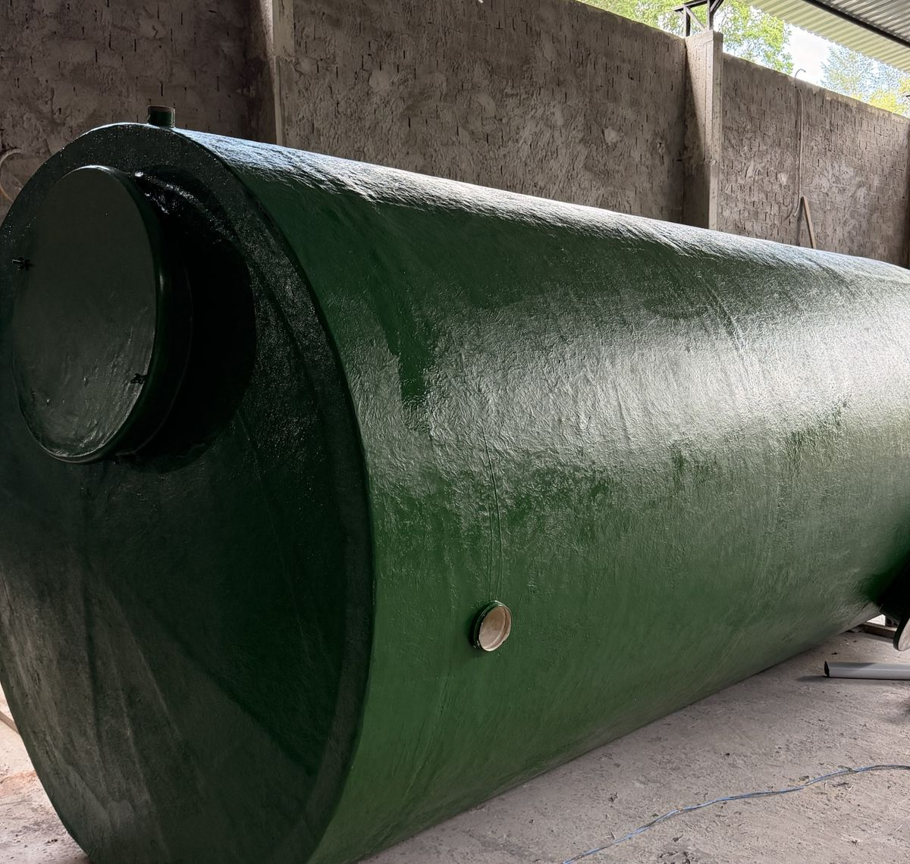
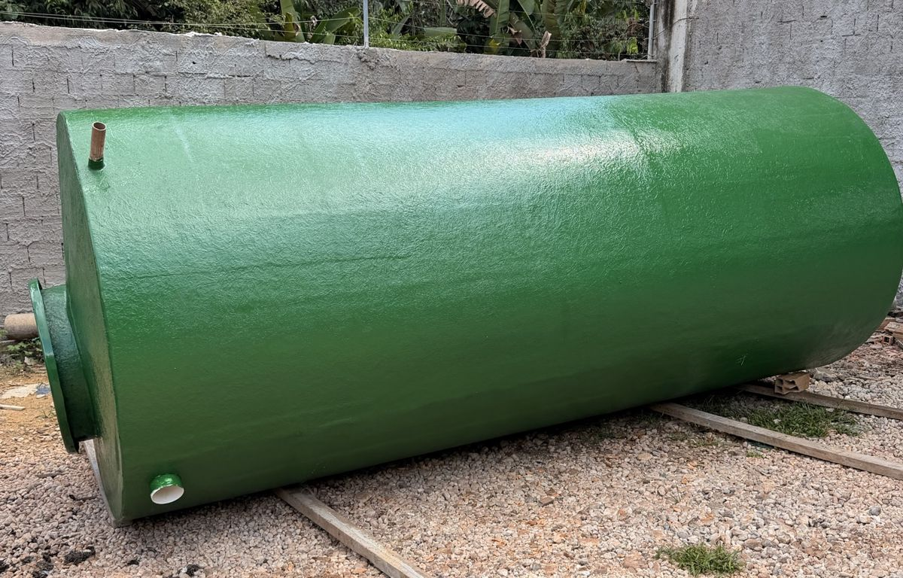
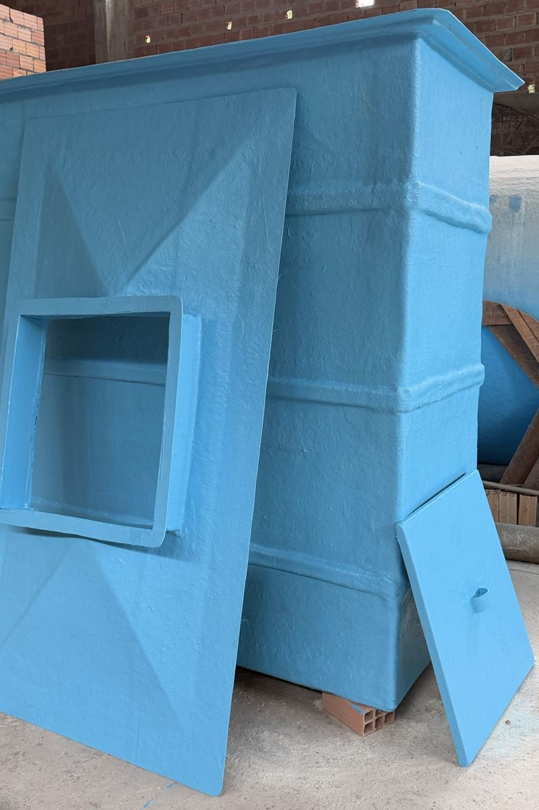

Início › Produtos › Tanques e reservatórios
Tanques e reservatórios em PRFV
Fabricação de tanques, reservatórios e peças em fibra de vidro sob medida.
- Garantia de 5 anos nos equipamentos em PRFV fabricados pela SANEAR
- Alta resistência à corrosão, ideal para esgoto e produtos químicos
- Material leve, o que facilita transporte e instalação
- Longa vida útil e baixa necessidade de manutenção
- Fabricação sob medida para cada projeto
Fabricados na SANEAR




Conte as medidas que você precisa
Pedir orçamento pelo WhatsApp